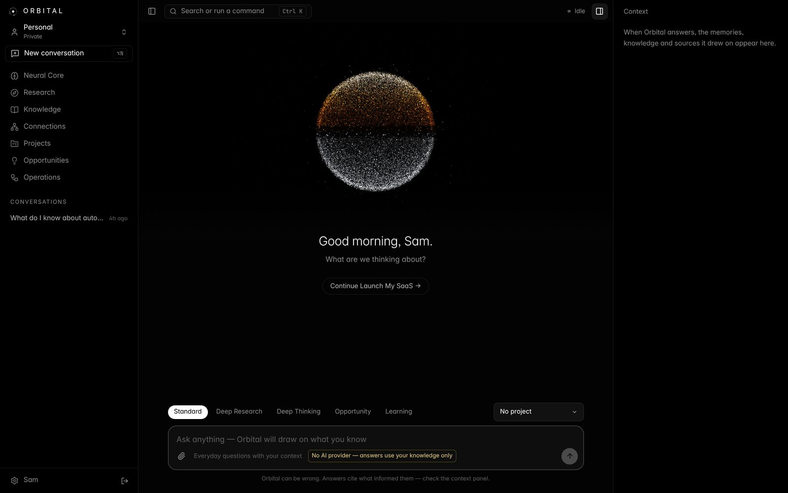

Orbital remembers what matters, connects your ideas, researches with verified sources, and turns what you know into opportunities. Free, and your data stays on your computer.
Free · Intel Mac? · Linux and all downloads
Each screen is a capture of the running app with real data from a test account. Pick a screen to see it.

Eight tools on top of the five engines. Each runs on Orbital's own server and data.
Talk to Orbital and hear it answer, or dictate into chat. Save any conversation to memory: it becomes a searchable note, and the facts you stated become memories.
One box for every conversation, note, file, web clip and research report. Matches words inside the content, highlights them, and filters by type.
PDFs (scanned ones too), Word, Excel, PowerPoint and images. Tables stay tables, slides keep their notes, and images are read and described.
Goals, deadlines, due dates, milestones and progress at a glance, with overdue work flagged in your own time zone.
Reminders on any task, note or project, plus nudges Orbital works out from your real data: overdue tasks, slipping deadlines, stalled projects and ideas you haven't returned to.
Save any article from a link or a bookmarklet. Orbital keeps the story, drops the menus and ads, and links it into your knowledge.
Teaches a topic starting from what you already know, ends with a learning path and questions to check your understanding, and notes the gaps it finds.
One objective, a timer, the tasks that serve it and a scratchpad saved to your notes. Navigation and notifications step back until you're done.
A business workspace shares knowledge, research and projects across a team, then puts them to work. People approve anything that leaves the system.
Every morning or week: what changed, what's due, open questions, approvals waiting. Delivered to the team channel if you allow it.
Recurring research on markets and competitors, with every citation and statistic checked against the source text.
Works toward a goal you set: proposes tasks in the right project, notes, research and team messages. Internal work can run on its own.
Messages wait for an admin, who can edit them first. Every decision is logged with who made it.
Signed webhooks into Slack, Teams, Zapier, Make or n8n. An API lets a CRM or help desk add knowledge and ask grounded questions.
Owner, admin, member and viewer. Knowledge is shared; each person's conversations stay private.
Everything you write and save stays in Orbital's own private database on your computer. AI is optional: Orbital works as your knowledge base without it, and you can add your own AI key in Settings any time.
macOS 11 or newer. Not sure which chip? Apple menu → About This Mac.
Latest version · all downloads and release notes
xattr -cr /Applications/Orbital.app in Terminal.What Orbital is and what it does, in real footage from the product: the Neural Core, answers grounded in what you know, cited research and more.